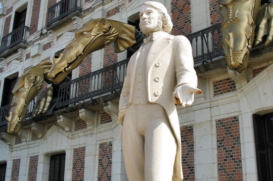

Magic Time

 Музей магии в Париже
Музей магии в Париже
Это старинное здание со сводчатыми каменными стенами обязательно зачарует детей и взрослых, мечтающих быть похожими на Гарри Поттера или зачитывающимися сказочными историями о великом волшебнике Мерлине. Речь идёт об одном из самых необычных музеев мира – музее Магии (Musee da la Magie), находящемся в Париже, в подвале дома номер 11 на старинной улице Сент-Поль.
Почему именно в Париже?
Во-первых, в 17 веке именно Франция стала излюбленной страной для выступлений странствующих чародеев и фокусников, особенно они облюбовали Новый мост, не менее популярным осталось мастерство иллюзионистов в наше время.
Во-вторых, в основе музея частная коллекция известного французского иллюзиониста и коллекционера мистических атрибутов Жоржа Пруста.
Получивший педагогическое образование и начавший работать преподавателем литературы, Жорж на досуге осваивал сначала жонглирование, а потом в результате случайного знакомства с группой иллюзионистов увлёкся искусством магии. Первые предметы для работы он отыскивал в антикварных лавках, идея коллекционировать атрибутику фокусника пришла к нему гораздо позже. С 60-х годов его коллекция постоянно выставлялась, но нынешний Музей магии, уже ставший неотъемлемой достопримечательностью французской столицы, был открыт в 1993 году.
Кстати, самого Жоржа, получившего титул «Иллюзионист года» и приз Академии Магических искусств, по уверениям туристов, можно встретить иногда в музее, он увлечённо рассказывает посетителям о своей коллекции. Уже у самого входа начинаются чудеса: у двери на волшебной перьевой ручке сидит дьяволёнок и манит вас заглянуть внутрь, с помощью ручки выводя приглашение войти. А за волшебной дверью, пройдя несколько ступеней вниз, вы попадаете на настоящее магическое представление, продолжающееся минут 20 и демонстрирующее 15 волшебных иллюзий. Задание зрителя – не просто очаровано лицезреть происходящее, но и понять суть фокуса, правда, сделать это будет сложно. Также будет интересно прослушать начинающуюся сразу после представления лекцию об истории магии и самого музея, а ведёт лекцию настоящий волшебник, перемежая теорию фокусами.
Здесь можно увидеть инструменты и реквизиты известных фокусников Роббера-Удена, считающегося отцом магии и написавшего несколько теоретических трудов, Де Вера, Бюатье де Кольта, старинные афиши и гравюры, зазывающие когда-то посмотреть удивительные представления. Есть здесь волшебный стул, сев на который, ассистентка волшебника сразу исчезала, шкатулки с секретом, волшебные палочки, особо интересен раритетный реквизит для фокуса с распиливанием человека, принадлежавший впервые исполнившему этот трюк Говарду Топстону.
Некоторые экспозиции демонстрируют предметы, которые использовались гадалками и медиумами для сеансов спиритизма – вызова духов. Один из отделов волшебного музея собрал знаменитые орудия оптических иллюзий – множество зеркал разного размера. Некоторые экспонаты интерактивны, так что можно испробовать силу волшебных зеркал на себе. В этом же подвале находится ещё один музей – Музей занимательных автоматов. Здесь были собрано более сотни забавных фигурок, приводимых в движение нажатием кнопки. Да и из сувенирной лавки невозможно выйти без покупки, здесь можно неторопливо рассмотреть товар и выбрать книги по магии, карты таро, волшебные палочки, коробки – магазин «Magasin de Magie» расположен по соседству на улице Тампль (Rue du Temple).
Дом мага Робер-Удена
Дом мага Робер-Удена (фр. La Maison de la Magie Robert-Houdin) – дом-музей, посвященный знаменитому французскому иллюзионисту Жану Эжену Робер-Удену (1805-1871), отцу современной магии. Дом мага находится у входа в Замок Блуа. Перед зданием музея стоит статуя Робер-Удена.
Главная достопримечательность музея – страж дома, шестиглавый дракон, головы которого каждые полчаса появляются из открывающихся окон здания – впечатляющее шоу.
Юным посетителям предлагается представление по мотивам сказки Алиса в стране чудес – на фоне сказочного представления иллюзионист показывает фокусы. Экспозиция первого уровня музея: ротонда с историей магии, картинами, музыкой; греческий храм, прославляющий фокусников средних веков; калейдоскоп жизни и шахматная доска оптических иллюзий; экспозиция "The firm of Robert-Houdin fantastic". На втором уровне представлена мастерская часовщика, магическое устройство для научных исследований (оптика и электричество) и волшебные часы. На третьем уровне – «галлюциноскоп», который погружает посетителей в мир 20 000 лье под водой Жюля Верна.
В доме-музее проводятся публичные мероприятия и выставки, связанные с магией и иллюзионизмом. На протяжении всего года в музее проходят спектакли, проводятся занятия по знакомству детей и их родителей с простейшими фокусами, а также работает центр по подготовке фокусников, являющийся филиалом Международного центра иллюзионизма и магии.
